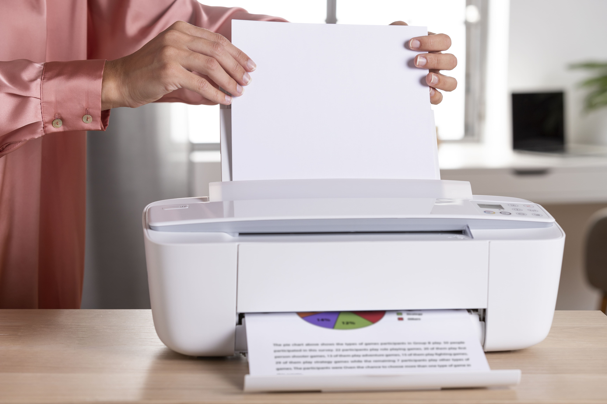
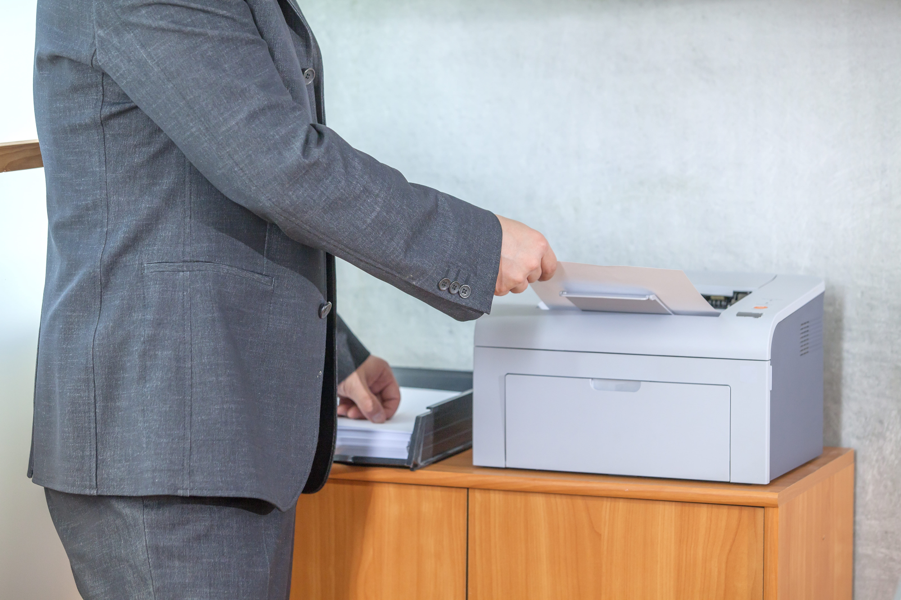
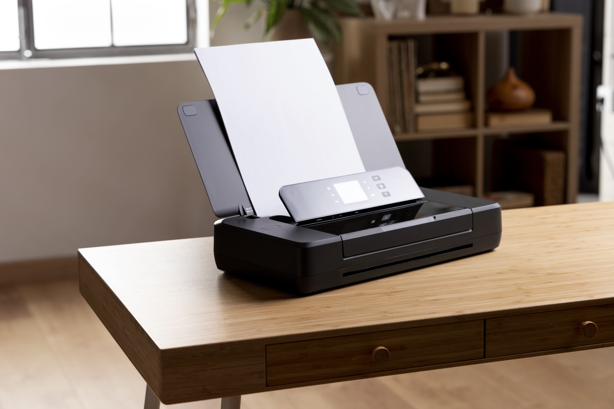
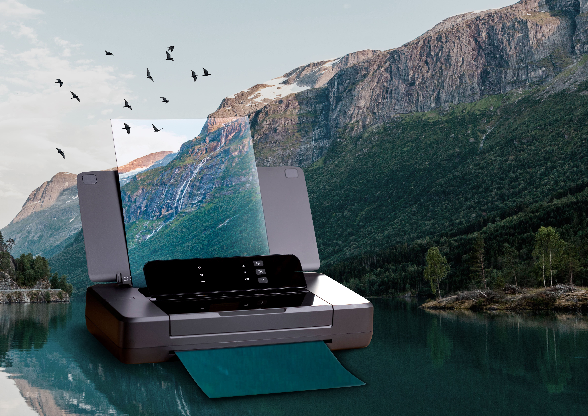

Inkjet printers dominate the Canadian home printer market for good reason: they offer versatile colour printing, acceptable text quality, and a relatively low entry price. The technology works by forcing liquid ink through microscopic nozzles onto paper in precise droplet patterns to form text and images.
For Canadian families printing school projects, occasional documents, and digital photos, an inkjet all-in-one covers essentially all needs in a single compact device. The colour reproduction on photo-quality paper is genuinely impressive on mid-range and higher inkjet models — approaching the output of commercial print labs for standard photograph sizes.
The main limitation is cost at volume. Ink cartridges are expensive relative to laser toner when measured per page. For a household printing 50 or fewer pages per week, this isn't a meaningful concern. For anyone printing several hundred pages monthly, the math shifts decisively in favour of laser. In Canada's cold climates, another consideration: ink can thicken slightly in very cold environments — if your printer lives in an unheated garage or basement, an inkjet may deliver inconsistent results during winter months.

Colour printing, photos, occasional home use, students
High per-page cost, ink drying when unused, starter cartridges
Avoid storing in cold unheated spaces in winter

High-volume text documents, offices, home offices, small businesses
Higher upfront cost, larger physical size, limited photo quality
Toner performs consistently in cold — ideal for unheated spaces
Laser printers are the backbone of Canadian offices, from sole-proprietor accounting practices in Halifax to busy legal offices in downtown Vancouver. They use powdered toner rather than liquid ink, fusing it to the page with heat in a process that produces extremely sharp, smear-resistant text output at consistently high speeds.
The economics of laser printing become clear at volume. A toner cartridge typically produces significantly more pages than an ink cartridge, and the per-page cost drops substantially as monthly print volume increases. For any Canadian household or business printing more than 200 pages per month, the total cost of ownership almost always favours a laser printer over inkjet despite the higher initial purchase price.
For small business owners across Canada — whether running a shop in Saskatoon or a service business in Kelowna — a monochrome (black and white) laser printer for invoices, reports, and correspondence, combined with an inkjet or photo printer for the occasional colour output, is often the most cost-efficient two-printer setup.
Colour laser printers are also available and deliver good colour document quality, though they remain more expensive than colour inkjet and produce softer photo results. For offices printing primarily text with occasional colour charts and presentations, a colour laser is a practical single-device solution.
All-in-one (multifunction) printers combine printing, scanning, and copying in a single device. Most models also include a flatbed scanner with an automatic document feeder for multi-page scanning. Some include fax capability, though this is less relevant for most Canadian consumers today.
For Canadian home offices, freelancers, and small businesses, an all-in-one eliminates the cost and desk space of a separate scanner while adding functionality that gets used regularly. Scanning receipts for expense reporting, digitizing signed contracts, creating PDF copies of paper documents — these are everyday tasks for many Canadians, and having a scanner built into the printer removes friction from all of them.
All-in-one models are available in both inkjet and laser versions. Your choice of underlying technology (inkjet vs laser) should still be driven by your primary printing needs — the scanner and copier functions work similarly across both. Wi-Fi connectivity is standard on most current all-in-one models, making them accessible from any device on your home or office network.


Dedicated photo printers use specialized inkjet technology with additional ink colours to produce photographic prints that match or approach professional lab quality. Where a standard inkjet might use three or four colours, a photo printer might use six, eight, or twelve — adding light cyan, light magenta, grey, and other inks to expand the tonal range and reduce visible grain in smooth gradients like skies and skin tones.
For Canadian photography enthusiasts — whether shooting landscapes in the Rockies, portraits, wildlife, or street photography in cities like Toronto and Montreal — a dedicated photo printer allows producing gallery-quality prints at home at a fraction of the cost of professional lab printing for volume output.
Compact photo printers (sometimes called instant photo printers) offer a more portable option: small units that print wallet-sized or postcard-format prints directly from a smartphone. These use either inkjet or special dye-sublimation technology and are popular for events, gifts, and travel. They're widely available in Canada at electronics retailers and make practical gifts.
For professional photographers or serious hobbyists, wide-format photo printers that handle A3 or larger paper produce stunning large-print results. These are a significant investment, but for Canadian photographers selling prints locally or online, in-house printing capability adds flexibility and eliminates lab turnaround time.